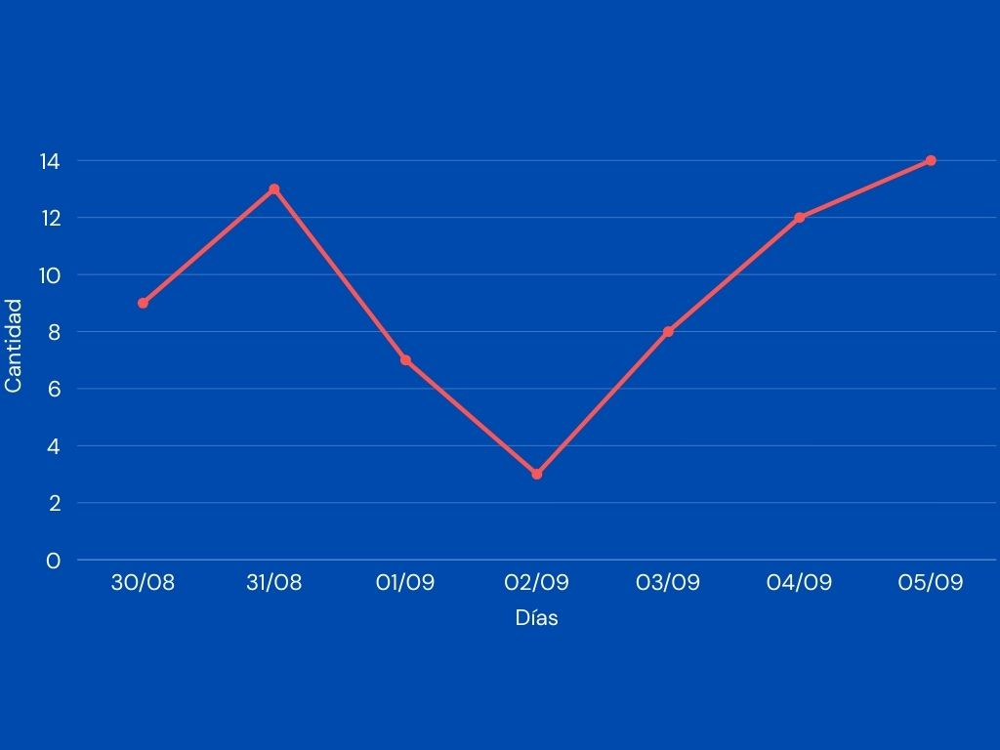
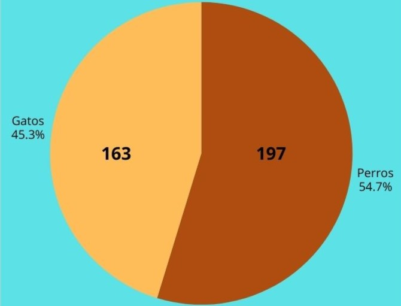
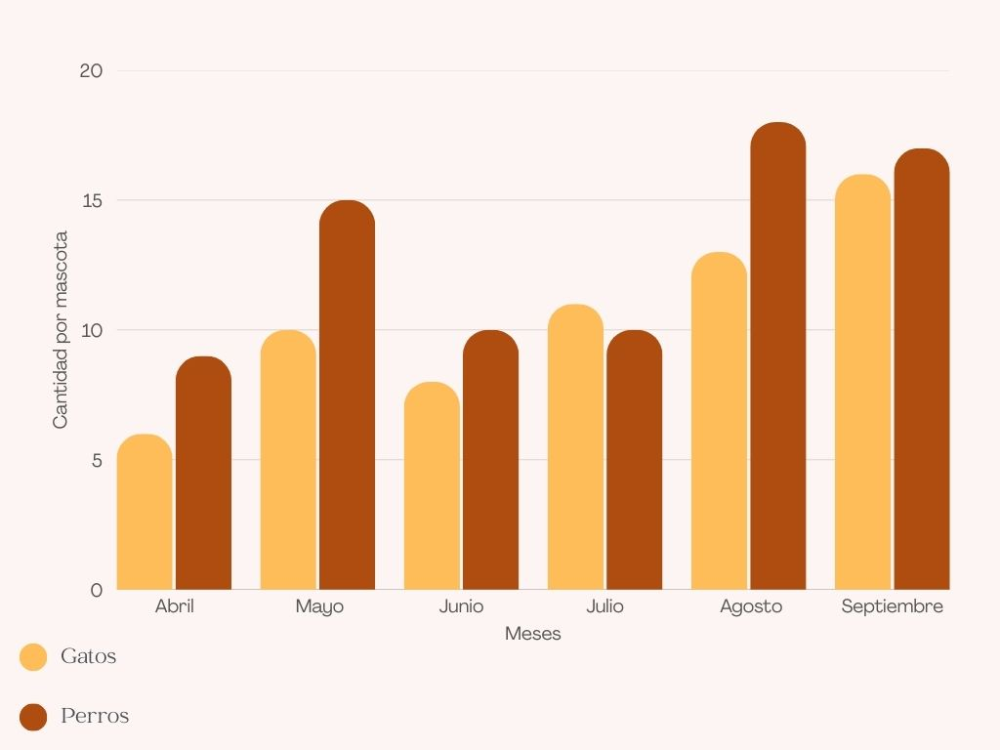

Avisos de Adopción por Día
Este gráfico muestra la tendencia de nuevos avisos publicados durante la última semana.

Distribución por Tipo de Mascota
Este gráfico representa el porcentaje total de perros y gatos listados en nuestra plataforma.

Comparativa Mensual: Gatos vs. Perros
Este gráfico compara la cantidad de avisos de gatos frente a perros en los últimos meses.
